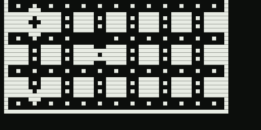
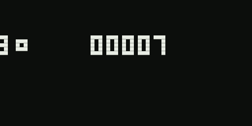
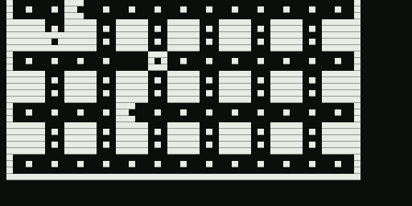

Chase
K. Bolch · DREAMER no. 16 (1981-12) p. 3 2K RAMjoystick



Clear all the dots from the maze while avoiding the monsters; you are the square with a dot in its centre. Clearing a dot at the far left or right halves the monsters' speed. Bauer's joystick routine is included at the start of the program.
Keys
Bauer's joystick.
Files
| File | Version | Load | Run |
|---|---|---|---|
| Chase.c8 | main | 0200-05FF | C000 |
Listing as transcribed (with notes): chase.txt
Source
DREAMER no. 16 on archive.org, p. 3 (PDF page 5). Author: K. Bolch.
Corrections applied
None.
Open doubts
- 02A0-02B7 is an unused copy of the joystick routine and 0344-034C an unused fragment; left as printed.
- The end of the game (0390) was not reached.